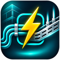
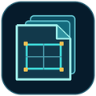

Extensiones Eléctricas 1.4.7
Rutas CAD, conduits, modelado de conductores, charolas, calculadora eléctrica, vínculos de Excel, documentación y utilidades de coordinación.
En revisión de Autodesk MarketplaceARQ Tools desarrolla complementos independientes para Autodesk Revit. Dos soluciones especializadas: ingeniería eléctrica y administración de vistas.

Rutas CAD, conduits, modelado de conductores, charolas, calculadora eléctrica, vínculos de Excel, documentación y utilidades de coordinación.
En revisión de Autodesk Marketplace
Herramientas para ejes, niveles, visibilidad gráfica masiva, asignación de plantillas por filtro y análisis de vínculos RVT. Incluye un módulo experimental de automatización VV/VG.
Vista preliminar · no lista para producciónLa documentación contextual se incluye en el complemento instalado y puede abrirse desde su cinta.
Las ediciones comerciales previstas validan derechos de uso con Autodesk Entitlement API. La compra depende de la publicación y configuración del Marketplace.
Los flujos de trabajo sobre modelos son locales según la versión analizada. Consulta qué datos se procesan.
Correo de soporte y privacidad: arqtools0@gmail.com.